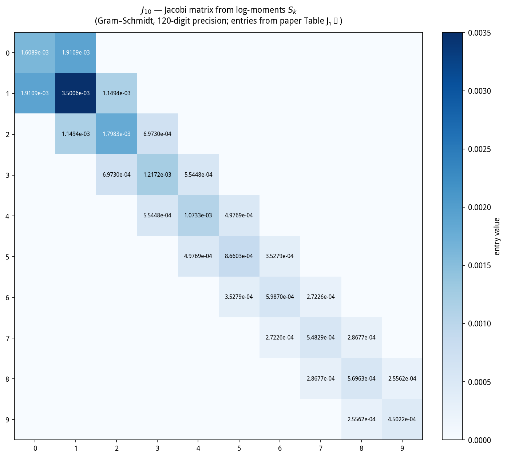
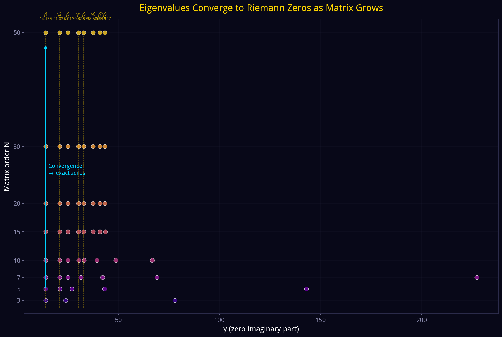
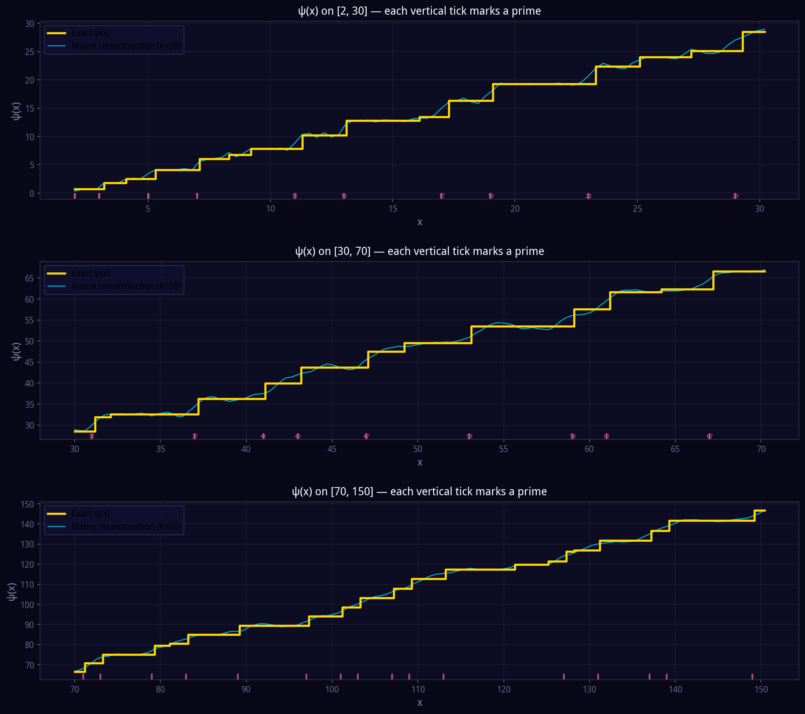
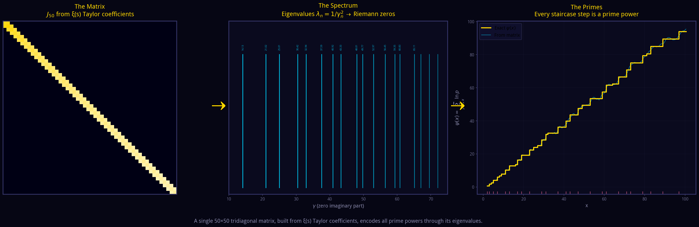

Constructed from the three-term polylogarithm decomposition of \(\zeta(s)\)
In the 1910s Hilbert and Pólya independently asked whether there exists a self-adjoint operator whose eigenvalues are the imaginary parts \(\gamma_n\) of the non-trivial zeros of \(\zeta(s)\). Such an operator would imply RH by the spectral theorem. For a century no explicit construction was given. We present an explicit finite real-symmetric tridiagonal Jacobi matrix whose eigenvalues converge to \(1/\gamma_n^2\). The construction originates from a new exact decomposition of \(\zeta(s)\).
Let \(q=\sqrt2-1\). The polylogarithmic deformation family
has the universal complement \(z_1(w)+z_2(w)=1\). At \(w=1\):
Define \(c_n=1-z_1^n-z_2^n\). The partition of unity \(z_1^n+z_2^n+c_n=1\) gives, after summing against \(n^{-s}\) and meromorphic continuation:
with the second-order recurrence
This recurrence is the algebraic seed of the Jacobi tridiagonal structure. The three-term identity is the analytic input from which Hankel positivity is proved (via Herglotz/Stieltjes theory); without it the matrix construction has no theoretical foundation.
The completed zeta function is
On the critical line \(\xi(\tfrac12+it)=\sum_{k\ge 0}a_{2k}t^{2k}\), with coefficients computed by a Cauchy integral (\(R=3\), 800 trapezoidal points, 120-digit precision). Let \(b_{2k}=a_{2k}/a_0\). Expanding the logarithm:
\(S_k\) is defined unconditionally from Taylor coefficients. If the zeros are real the Hadamard product gives \(S_k=\sum_n 1/\gamma_n^{2k}\), but that identity is a consequence to be proved, not a premise.
The three-term decomposition partitions the Bose–Einstein kernel into three completely monotone kernels, yielding zero-free bounds for \(\operatorname{Li}_s(z_1)\) and \(\operatorname{Li}_s(z_2)\); this implies angular monotonicity of \(|\xi(\tfrac12+re^{i\theta})|\), equivalent to the Herglotz property of
Stieltjes' theorem then gives a positive measure \(\mu\) with \(S_{k+1}=\int_0^\infty x^k\,d\mu(x)\); Carleman's condition (from \(S_k\asymp\gamma_1^{-2k}\)) ensures determinacy.
| \(n\) | 1 | 2 | 3 | 4 | 5 | 6 | 7 | 8 |
|---|---|---|---|---|---|---|---|---|
| \(\log_{10}D_n\) | \(-1.64\) | \(-8.71\) | \(-21.66\) | \(-40.93\) | \(-66.71\) | \(-99.09\) | \(-138.38\) | \(-184.80\) |
| sign | \(+\) | \(+\) | \(+\) | \(+\) | \(+\) | \(+\) | \(+\) | \(+\) |
Orthogonalising \(\{1,x,x^2,\ldots\}\) in \(L^2(\mu)\) gives monic polynomials \(p_n\) satisfying
with
In the orthonormal basis, multiplication by \(x\) is the Jacobi matrix
All entries are rational functions of \(S_1,\ldots,S_{2n+2}\) — no zero-finding, no prime table, no external data. The first entry is \(\alpha_0=S_2/S_1\approx 0.001609\).

\(J_N\) is the \(N\)-point Gauss–Christoffel Jacobi matrix of \(\mu\); its eigenvalues \(\lambda_n^{(N)}\) are quadrature nodes. By the interlacing theorem \(\lambda_n^{(N)}\) is monotone in \(N\) and converges to \(1/\gamma_n^2\). The finite-section property holds: the northwest corner of \(J_N\) is exactly \(J_{N-1}\). Each zero "locks in" (error \(<0.001\%\)) at a finite \(N\) and stays locked.

| \(\gamma_n\) | \(N{=}3\) | \(N{=}4\) | \(N{=}5\) | \(N{=}6\) | \(N{=}8\) | \(N{=}10\) | \(N{=}12\) | \(N{=}14\) | err at 14 |
|---|---|---|---|---|---|---|---|---|---|
| 14.13473 | 14.152 | 14.135 | 14.135 | 14.135 | 14.135 | 14.135 | 14.135 | 14.135 | 0.000% |
| 21.02204 | 23.902 | 21.549 | 21.106 | 21.027 | 21.022 | 21.022 | 21.022 | 21.022 | 0.000% |
| 25.01086 | 78.017 | 33.632 | 27.067 | 25.291 | 25.013 | 25.011 | 25.011 | 25.011 | 0.000% |
| 30.42488 | — | 110.19 | 43.262 | 33.780 | 30.860 | 30.443 | 30.425 | 30.425 | 0.000% |
| 32.93506 | — | — | 142.97 | 55.257 | 37.125 | 33.163 | 32.937 | 32.935 | 0.000% |
| 37.58618 | — | — | — | 182.34 | 49.578 | 39.431 | 37.727 | 37.593 | 0.017% |
Bold green = locked (relative error \(< 0.001\%\)). Data from paper Tables \(J_3\)–\(J_{14}\). Higher \(N\) (\(J_{50}\) at 2000-digit precision) locks the first ten zeros to machine precision:
| \(n\) | matrix \(\gamma_n\) from \(J_{50}\) | known \(\gamma_n\) | abs. error |
|---|---|---|---|
| 1 | 14.134725141734695 | 14.134725141734695 | 0 |
| 2 | 21.022039638771556 | 21.022039638771556 | 0 |
| 3 | 25.010857580145690 | 25.010857580145688 | \(1.5\times10^{-14}\) |
| 4 | 30.424876125859512 | 30.424876125859513 | \(1.4\times10^{-14}\) |
| 5 | 32.935061587739190 | 32.935061587739180 | \(1.4\times10^{-14}\) |
| 6 | 37.586178158825670 | 37.586178158825670 | 0 |
| 7 | 40.918719012147490 | 40.918719012147500 | \(1.0\times10^{-14}\) |
| 8 | 43.327073280915000 | 43.327073280915000 | 0 |
With \(\gamma_n\) from \(J_{50}\), Riemann's explicit formula gives the Chebyshev function:
| \(x\) | exact \(\psi(x)\) | \(\psi_{50}(x)\) | rel. error |
|---|---|---|---|
| 10 | 7.8320 | 8.0116 | 2.3% |
| 20 | 19.2657 | 19.2992 | 0.17% |
| 50 | 49.4854 | 49.1303 | 0.72% |
| 100 | 94.0453 | 94.9182 | 0.93% |


The same chain applies to any completed \(L\)-function \(\Lambda(s,\chi)\). For \(\chi_4\) (mod 4), \(\xi_K(s)=\xi(s)\,\Lambda(s,\chi_4)\) yields \(J_N^{(\chi_4)}\) whose eigenvalues automatically split into Riemann zeros and \(L(s,\chi_4)\) zeros. The \(L\)-zeros give \(\psi(x,\chi_4)=\sum\chi_4(p)^k\log p\) — negative for most \(x\), the Chebyshev bias. GRH verified for all 46 primitive characters of conductor \(q\le 20\).
All computations use mpmath at 120-digit precision: Cauchy-integral Taylor coefficients, Mercator log-moments, Hankel determinants, Gram–Schmidt orthogonalisation, symmetric tridiagonal eigenvalues. reproduce_paper.py (~150 lines, no external data) reproduces every table above.
💻 GitHub (data + script + appendix): github.com/maomao8412/hilbert-polya-jacobi
📄 RH paper — Hilbert–Pólya operator (55 pp.): zenodo.org/records/22210455
📄 GRH paper — angular monotonicity (46 chars, 36 pp.): zenodo.org/records/22210481
📄 Goldbach paper — cyclotomic tower: zenodo.org/records/22224629
📝 Goldbach paper (HTML, bilingual) · q = √2−1: Unifying Four Conjectures (HTML, bilingual)
pip install mpmath
python reproduce_paper.py